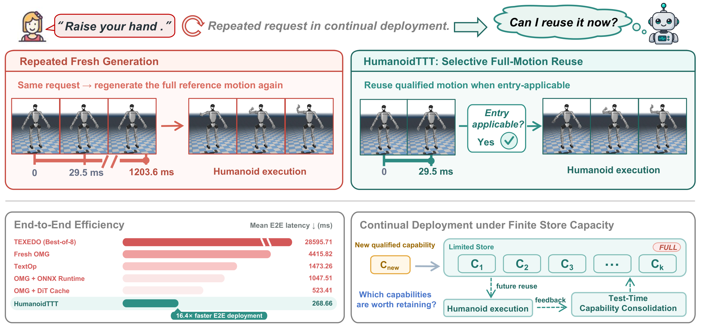
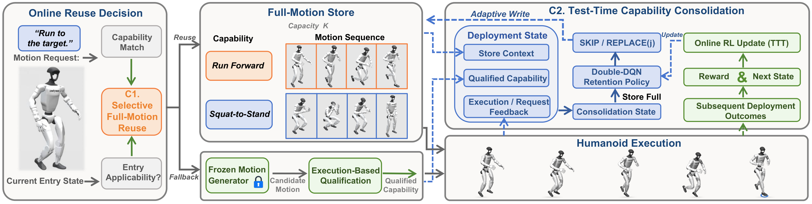
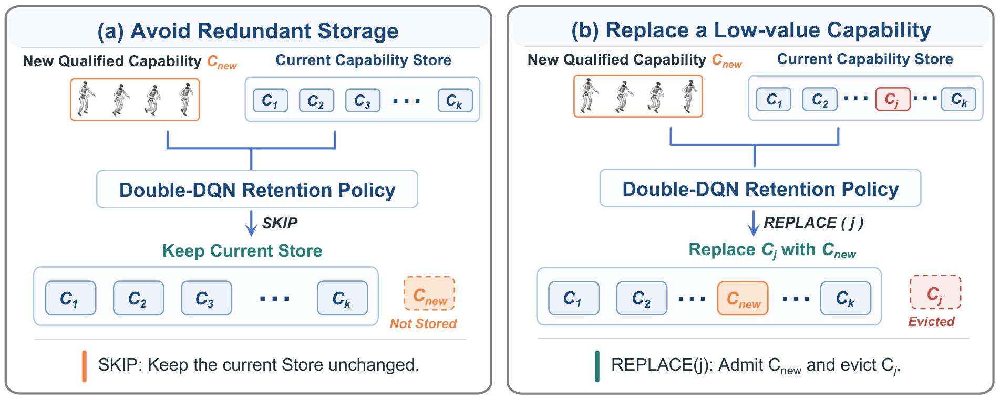

01
Walk → Turn → Walk
G1 rollout
View full-size figure ↗For recurring requests, Entry Applicability enables direct reuse of qualified full motions when the current state satisfies their entry certificates, bypassing fresh generation.
Test-Time Capability Consolidation uses deployment feedback to adapt the contents of a bounded Full-Motion Store.
The lower-left panel compares mean end-to-end latency on the evaluated recurrent request trace.

View full-size figure ↗Entry Applicability controls direct reuse of Validated Full-Motion Capabilities. A miss invokes the Frozen Motion Generator followed by Execution-Based Qualification.
When a Qualified Capability reaches a full Store, a Store-conditioned Double-DQN chooses SKIP or replacement of an existing entry and adapts online from subsequent deployment reuse utility.

View full-size figure ↗(a) SKIP retains the current Store without admitting the arrival.
(b) REPLACE(j) admits the new capability and evicts entry j.
The Double-DQN scorer selects an action using Store-conditioned features.
Walk → Turn → Walk
G1 rolloutWalk → Squat → Walk
G1 rolloutWalk → Single Wave → Walk
G1 rolloutTurn → Walk → Turn
G1 rolloutTurn → Squat → Turn
G1 rolloutTurn → Single Wave → Turn
G1 rolloutSquat → Walk → Squat
G1 rolloutSquat → Turn → Squat
G1 rolloutSquat → Single Wave → Squat
G1 rolloutSingle Wave → Walk → Single Wave
G1 rolloutSingle Wave → Turn → Single Wave
G1 rolloutSingle Wave → Squat → Single Wave
G1 rolloutWalk forward, then make a smooth turn, then walk forward.
Real-world rolloutWalk forward, then squat fully and stand up, then walk forward.
Real-world rolloutWalk forward, then raise one hand overhead and wave once, then walk forward.
Real-world rolloutMake a smooth turn, then walk forward, then make a smooth turn.
Real-world rolloutMake a smooth turn, then squat fully and stand up, then make a smooth turn.
Real-world rolloutMake a smooth turn, then raise one hand overhead and wave once, then make a smooth turn.
Real-world rolloutSquat fully and stand up, then walk forward, then squat fully and stand up.
Real-world rolloutSquat fully and stand up, then make a smooth turn, then squat fully and stand up.
Real-world rolloutSquat fully and stand up, then raise one hand overhead and wave once, then squat fully and stand up.
Real-world rolloutRaise one hand overhead and wave once, then walk forward, then raise one hand overhead and wave once.
Real-world rolloutRaise one hand overhead and wave once, then make a smooth turn, then raise one hand overhead and wave once.
Real-world rolloutRaise one hand overhead and wave once, then squat fully and stand up, then raise one hand overhead and wave once.
Real-world rollout